距离东京市中心
最近的度假型酒店
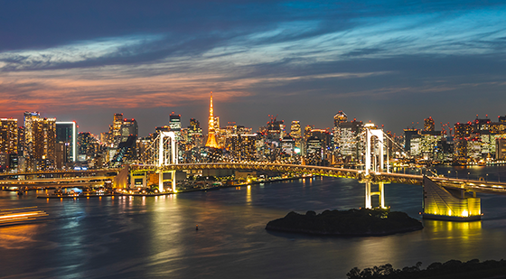
距离东京市中心最近的度假型酒
东京台场日航大酒店位于东京湾「御台场」地区，是距东京市中心最近的城市度假酒店。靠近市中心及羽田机场，交通便利，且地理位置优越，让您尽享东京的旅游和购物。从酒店高层远眺，东京湾全景、彩虹大桥、东京塔等震撼的夜景可尽收眼底。我们的理念是：畅游东京 享受东京。我们的工作人员将竭尽全力，为您提供可以深切体会全身心放松的优质服务。
用贴心的服务充实您的访日旅程
-
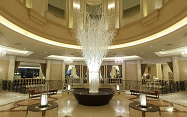
提供Wi-Fi
酒店内免费Wi-Fi全覆盖
-
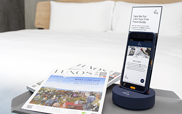
免费借用手机（安卓）
不限数据流量，住宿期间可携带外出
-
礼宾服务
提供旅游咨询及餐厅预约服务
支持结算方式
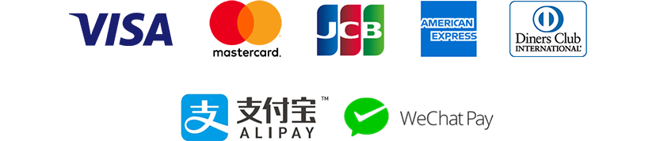交通便利，可前往机场、东京市中心、东京迪斯尼乐园
-
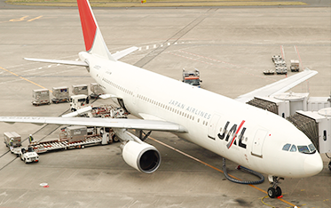
至羽田机场的直通巴士
约20分钟
*至成田机场需巴士90分钟路程
-
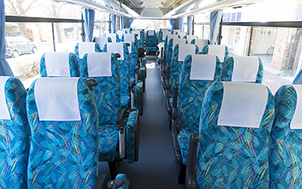
至东京迪斯尼乐园的直通巴士
约30分钟
-
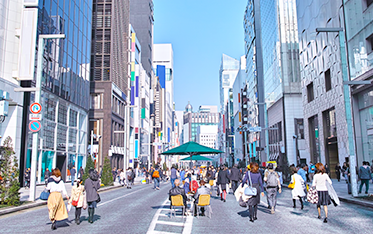
至东京市中心、银座
约20分钟
*可乘坐水上巴士前往浅草
路线：直通百合海鸥线「台场站」 点击此处获取前往酒店的详细交通资讯
繁华的台场 观光景点
酒店周边遍布台场各种购物、
休闲等观光景点，十分繁华。*提供免费循环巴士
酒店附近便利店及购物商城众多。
可用谷歌地图查找路线。
DiverCity东京广场
购物
海外以及日本的各大人气休闲品牌汇集于此，这里有带给您多重体验的大型娱乐设施，以及台场最大的美食广场，和全方位满足感官的餐厅楼层等。是一家看点纷呈的复合型商业设施。
AQUA CITY台场
购物
Aqua City台场与台场海滨公园相邻，台场自由女神和彩虹大桥近在眼前，是邻近市中心拥有绝好地理位置的大型综合性商场。是海风徐徐，聚集了休闲时尚为主约80家店铺的购物天堂。
台场DECKS海滨购物中心
购物
东京主题公园为室内游乐园，内有广受孩子们喜爱的乐高主题公园，出展国际明星名流的等身蜡像的东京杜莎夫人蜡像馆，还有可以享用了解大阪章鱼烧的章鱼烧博物馆等，是集娱乐、美食和购物为一体的趣味复合型商业设施。
维纳斯城堡
购物
维纳斯城堡是一家同时设有海外及日本品牌直销和LAOX之类免税店等的购物商城。商城再现17-18世纪的欧洲街景，室内天空随时间进行晴空，夕阳，夜晚的变幻演出，人气颇高。
大江户温泉物语
温泉
大江户温泉物语是一家可在东京市内享受温泉的温泉主题公园。以日本的庙会为主题，室内可穿着浴衣体验。内设有露天浴场等13种浴场和桑拿。
teamLab Borderless
休闲娱乐
teamLab Borderless在世界各地举行多次个展，有力的推动了数码技术的发展。 是数字艺术集团teamLab创建的世界最大规模的数字艺术博物馆。也是一个体验型的数码美术馆，尤其适合拍摄Instagram一类的照片。
丰洲市场
美食
丰州市场是由筑地市场搬迁至东京的新生鲜市场。市场内餐馆众多，有可以品尝到新鲜鱼类的寿司和海鲜饭，声名在外的日式蛋卷等，可以说是一条边走边吃的美食街。同时，还可以参观到金枪鱼和蔬菜水果的拍卖。
东京Big Sight 国际展示中心
活动
拥有日本最大的展示厅和国际会议场的会展设施，为东京车展、CM等大型活动的举办场地。

日本科学未来馆
休闲娱乐
日本科学未来馆是位于台场的科学博物馆。展馆内容以与我们的未来世界息息相关的尖端技术为主，可以轻松体验到日本引以为傲的最新科学技术。
PALETTE TOWN 摩天轮
休闲娱乐
PALETTE TOWN 摩天轮是台场地标性景点。每个季度都可欣赏到，展现出日本四季形象的不同灯光。从摩天轮上可将东京塔、东京天空树等著名景点尽收眼底。
MEGA WEB
休闲娱乐
MEGA WEB是丰田汽车的大型展馆。馆内展出各种丰田的新型汽车和古董汽车。更有可以体验丰田汽车制作的设施，供儿童驾驶汽车留念的摄影棚。
东京水上巴士
休闲娱乐
水上巴士连接台场海滨公园和浅草。穿过彩虹大桥，可以悠闲地于水上尽享东京各地美景。
客房类型
一流的服务行政楼层
东京台场日航大酒店的顶级楼层为行政楼层(25、26、27、28F)。
我们为行政楼层和普通套房的贵宾准备了专用的私人休息室。
市中心难以感受到的，是在「御台场」独有的度假空间中放松自我、治愈身心的感觉。
我们全体工作人员将会带给您宾至如归的完美体验。
另外,行政楼层的贵宾也可尽情地享用特选早餐，寿司、天妇罗、自助餐和日本料理。
请于行政酒廊办理入住和退房
请于行政酒廊办理入住和退房手续。另外，我们提供餐厅预约和旅游咨询等服务。
美食餐饮
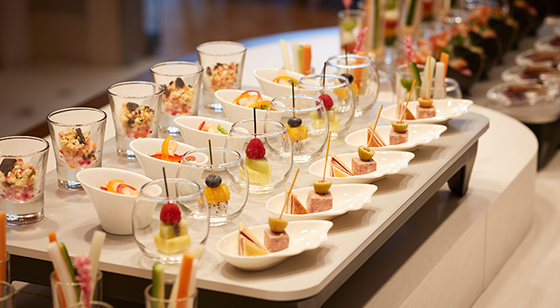行政酒廊会在不同时间段，提供咖啡、红茶、甜点、冷盘、红酒、日本清酒等各类丰富多样的美食及饮品。
*客房内的饮品（啤酒、红酒、无酒精饮品、咖啡）均为免费提供。
-
透过窗户，东京美丽的夜景一览无余。您也可前往27层的观景休息厅（View Lounge on 27th）欣赏美景。
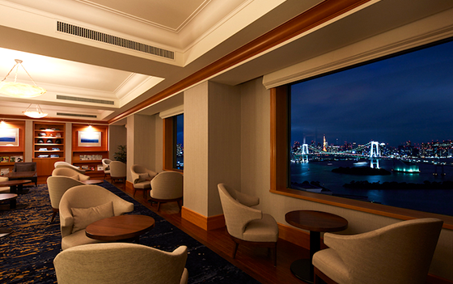 -
免费健身
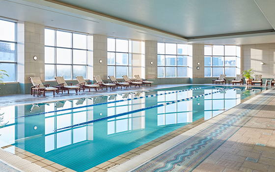
早餐概览
-
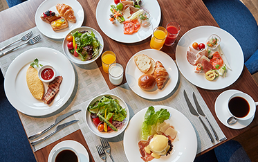
自助餐
-
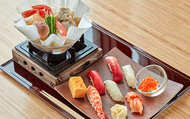
寿司 天妇罗
-

日本料理